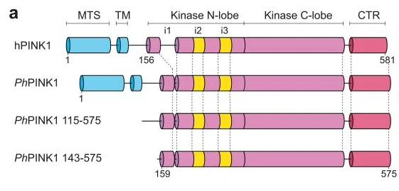
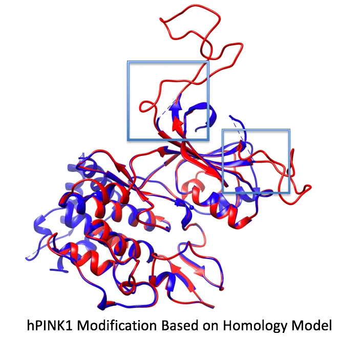
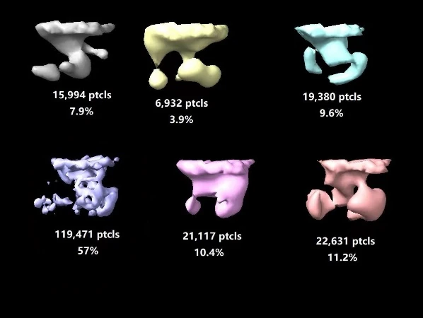
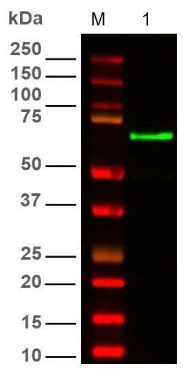
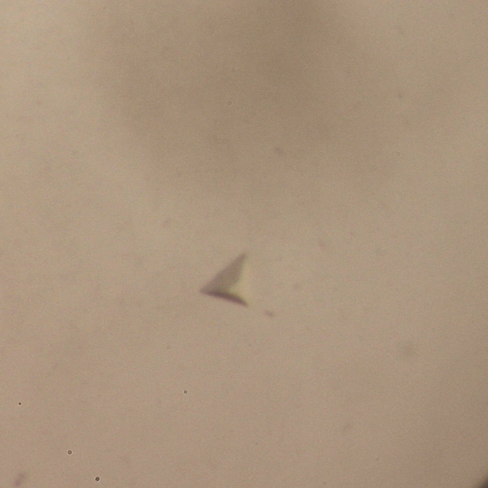

Context
PINK1 is a Parkinson's disease-associated kinase. When I joined Dr. Hoang's lab, the structure of TcPINK1 had just been published, but human PINK1 remained difficult to produce and structurally characterize.
I tested expression systems, constructs, and purification conditions to make human PINK1 tractable for cryo-EM and crystallography.
What I did
- Screened cell lines and constructs for human PINK1 expression.
- Developed a purification pipeline and produced samples for cryo-EM.
- Collected cryo-EM data and performed 3D classification.
- Grew crystals and collected X-ray diffraction data; built a homology-based structural model.
Key results
- Human protein
- PINK1Parkinson's disease kinase
- Structural methods
- 2Cryo-EM and crystallography
- Constructs tested
- MultipleCell lines and truncations
- A working human PINK1 expression and purification pipeline was established.
- Cryo-EM classes and crystal hits provided structural data for the human protein.
- The work created a foundation for mechanistic studies of PINK1 in Parkinson's disease.
Figures





Collaborators

Dr. Quyen Quoc Hoang
Principal Investigator
Indiana University School of Medicine
Dr. Misook Oh
Protein expression collaborator
Indiana University School of Medicine
Output
Source and disclosure. Adapted from Dr. Zheng's April 2024 research summary. This is unpublished postdoctoral work; structural data are summarized at a high level.